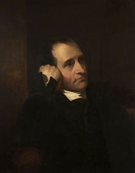

Samuel Crompton was born in 10 Firwood Fold, Bolton,
Lancashire to George and Betty Crompton (née Elizabeth Holt of Turton). His
father was a caretaker at nearby Hall i' th' Wood. Samuel had two younger
sisters. While he was a boy he lost his father and had to contribute to the
family resources by spinning yarn, learning to spin on James Hargreaves's
spinning jenny.The deficiencies of the jenny imbued him with the idea of
devising something better, which he worked on in secret for five or six years.
The effort absorbed all his spare time and money, including that which he earned
by playing the violin at the Bolton theatre.
On 16 February 1780 at Bolton Parish Church, Crompton married Mary Pimlott (or
Pimbley). They had eight children including George Crompton (born 8 January
1781), who followed in the family business.
About 1779, Samuel Crompton succeeded in producing a mule-jenny, a machine which
spun yarn suitable for use in the manufacture of muslin.It was known as the
muslin wheel or the Hall i' th' Woodwheel,from the name of the house in which he
and his family now lived.The mule-jenny later became known as the spinning mule.
There was a strong demand for the yarn which Crompton was making at Hall i' th'
Wood but he lacked the means to take out a patent. The prying into his methods
forced Crompton to choose between destroying his machine or making it public. He
adopted the latter alternative after promises by a number of manufacturers to
pay him for the use of the mule but all he received was about £60. He then
resumed spinning on his own account, but with indifferent success.
The mule-jenny twisted the rovings using rollers in the manner of Arkwrights
frame, while the spindle carriage moved back and forth 54 inches to stretch the
thread, and then to gather it in the spinning spindles in the manner of
Hargreaves jenny. The mule's importance was that it could spin thread better
than could be done by hand, which led to ever finer thread. Coarse thread (40s)
sold for 14 shillings per pound whilst (80s) spun on his mule sold at 42
shillings a pound.
"This view of THE HALL ITH' WOOD NEAR BOLTON. (where Samuel Crompton invented
the first SPINNING MULE) ...respectfully dedicated to the COTTON SPINNERS OF
LANCASHIRE." lithograph by F. Jones (Day & Son, Lithographers to the Queen),
after Selim Rothwell.
As the mule was unpatented others soon manufactured it. The machine was
constructed in iron, power was applied to assist the inward motion in 1790 and
by 1834 it was fully automatic or self-acting. A survey in 1812 showed there
were between 4 and 5 million mule spindles in use. Crompton received no
royalties for his invention